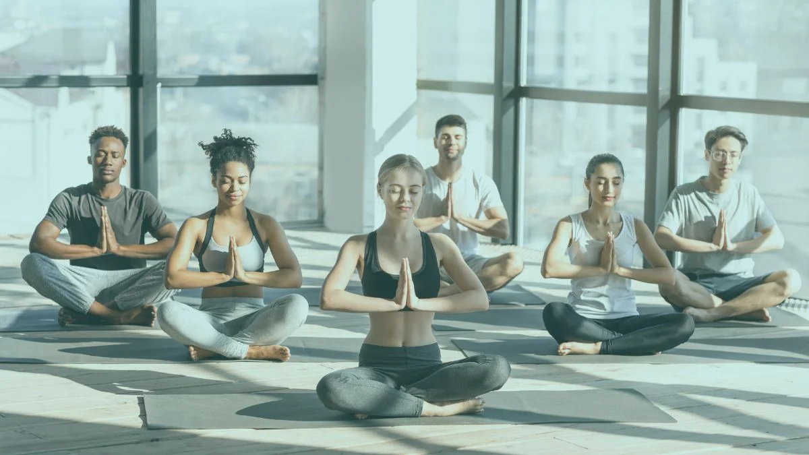
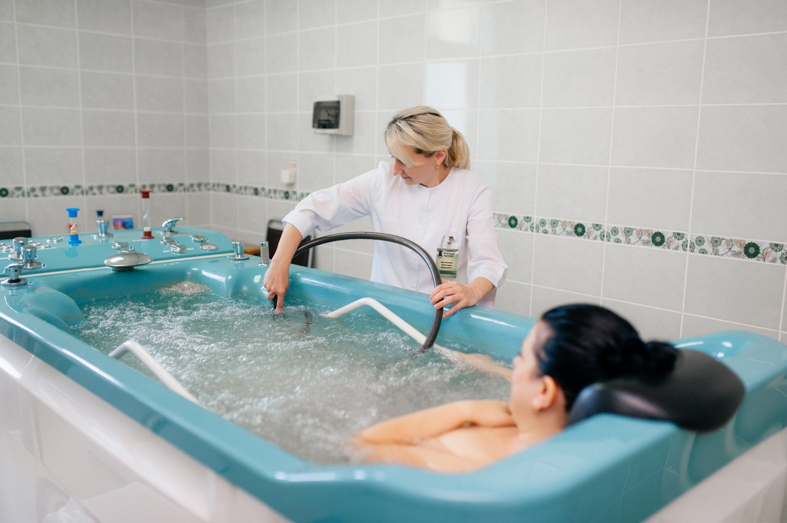
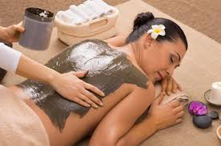
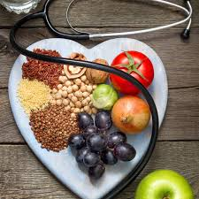
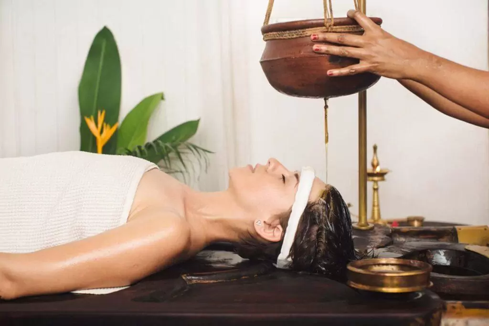
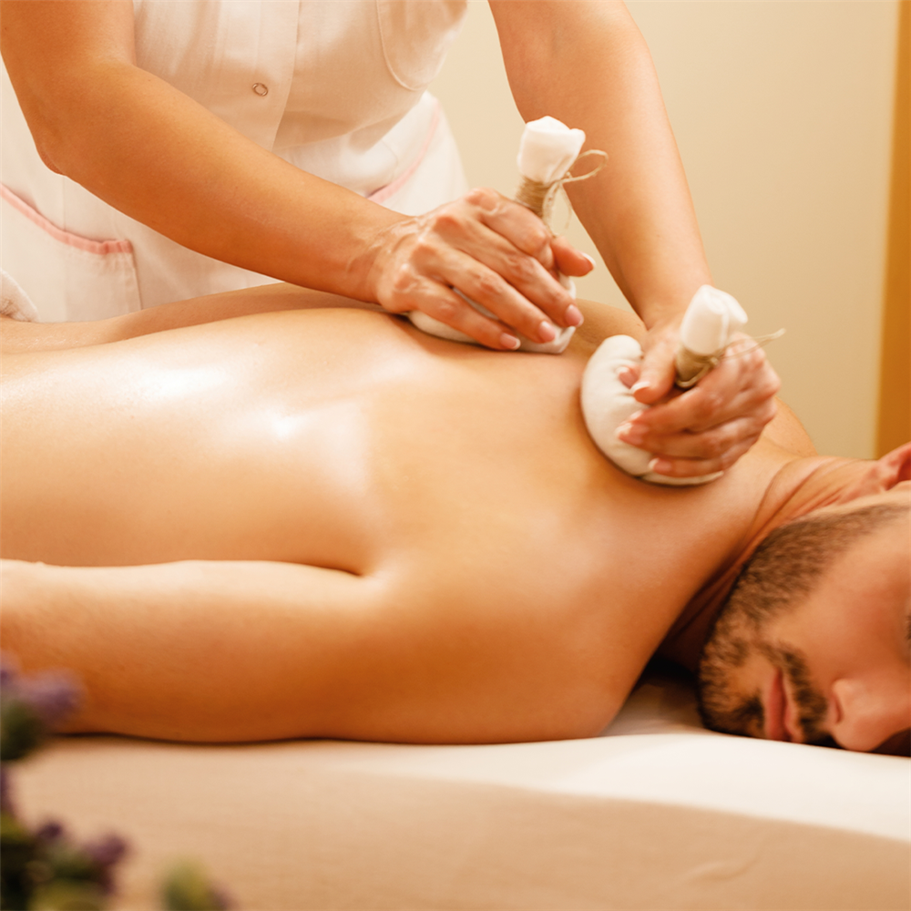

Yoga therapy is a natural healing method that uses breathing exercises, stretching and meditation to improve physical and mental health.

Hydrotherapy uses water in different forms such as steam, hot water and cold water to treat health problems and improve blood circulation.

Mud therapy uses natural mud to remove toxins from the body and improve skin health. It is widely used in naturopathy treatments.

Diet therapy focuses on natural and healthy food habits to prevent diseases and improve overall health.

Panchkarma is a traditional Ayurvedic detox treatment that removes toxins from the body and balances the body's energies.

Massage therapy uses herbal oils and special techniques to relax muscles, reduce stress and improve blood circulation.